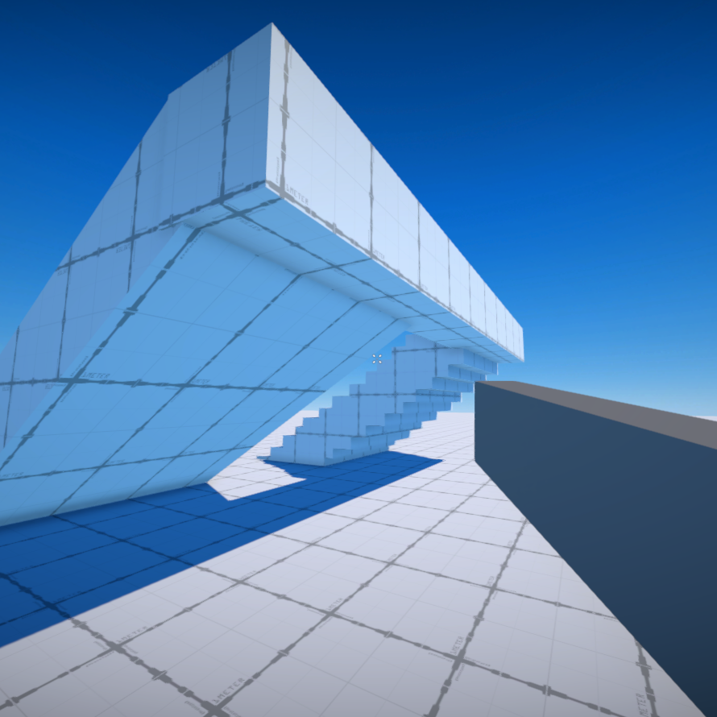

About Me
Hi there, hello! I'm Brober and I play games and make games.
My Current Project
Interaction Engine
A Unity project that I can use for any 3D game.


Hi there, hello! I'm Brober and I play games and make games.
A Unity project that I can use for any 3D game.
Social Media